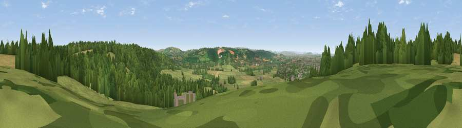

Viewpoint near Wraxall
#9910 in England · top 16% of its area beats it · near WraxallThe view, rendered

A 360° render of this exact spot computed from the terrain model, tree cover and land cover — summer colours, afternoon light, calibrated against photographs of famous viewpoints. Real trees, hedges and buildings will differ in detail.
The panorama
Grey silhouette: terrain skyline in each direction (720 bearings, Earth curvature and refraction included). Dashed green: skyline with trees (+15 m) and buildings (+8 m) as obstacles. Blue strip: how far the ground is visible on each bearing.
Where the view opens
Wedge length = distance to the farthest visible ground on that bearing (vegetation-aware). Rings at 10, 25 and 50 km.
What fills the view
51% grassland · 32% woodland · 12% cropland · 5% built-up
Angular shares of the visible panorama (visual magnitude), not map area. Landscape diversity 0.49 (0–1 Shannon).
Key numbers
More beautiful places nearby
The staircase of upgrades: each row has a higher view potential than everything closer. Driving times are estimates from straight-line distance, calibrated against real road routing — check an actual route before setting out.
| Place | Direction | Drive | Score |
|---|---|---|---|
| Viewpoint near Portbury | NNW · 2 km | ~6 min | 64.1 |
| Viewpoint near Tickenham | W · 5 km | ~11 min | 72.1 |
| Dundry Hill | SE · 7 km | ~15 min | 72.4 |
| Dial Hill | W · 9 km | ~18 min | 74.9 |
| Beacon Batch | S · 15 km | ~26 min | 79.4 |
| Bleadon Hill [Loxton Hill] | SW · 20 km | ~34 min | 79.6 |
| Viewpoint near Stinchcombe | NE · 35 km | ~54 min | 80.5 |
| Viewpoint near Holford | SW · 47 km | ~67 min | 80.8 |
51.44363, -2.72405 · source: screening · position refined by local search. Computed location — check access rights before visiting.